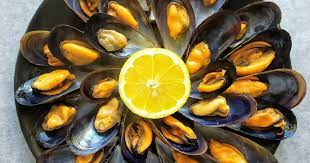

Entrantes
Mejillones al vapor
- Ingredientes para cuatro personas:
- 100 ml Aceite de oliva virgen extra
- 1 cucharadita Pimienta negra molida
- 1 cucharadita Cilantro en grano
- 1/2 cucharadita Comino en grano
- 1/2 cucharadita Cúrcuma molida
- 1/4 Sandía sin semillas
- 1 Tomate rosa
- 100 g Queso feta
- Escamas de sal
- Semillas de sésamo y Semillas de chía
Elaboración: preparamos el aceite de cúrcuma en una pequeña sartén. Calentamos el aceite y añadimos las especias, es decir, la pimienta negra molida, el cilantro en grano, el comino en grano y la cúrcuma molida. Removemos durante un par de minutos, controlando la temperatura, pues solo hay que calentar, no freír. Mientras el aceite de cúrcuma se atempera, cortamos la sandía y el tomate. Colocamos ambos ingredientes en una fuente de servir y cubrimos con el queso feta desmigado. Sazonamos y regamos con el aceite de cúrcuma. Servimos espolvoreando semillas de sésamo y de chía para aportar un toque crujiente.
Ensalada italiana de pulpo y patata
- Ingredientes 2 personas:
- Pulpo cocido
- Patata (unos 450-500 g)
- Aceite de oliva virgen extra:50 ml
- Zumo de limón:50 ml
- Perejil fresco
- Pimienta negra molida y Sal
Elaboración: Lavar y secar las patatas. Poner en una olla cubiertas de agua fría y calentar hasta que entre en ebullición. Cocer a fuego medio sin romper el hervor hasta que estén tiernas, pero no muy blandas, que se puedan atravesar con un cuchillo afilado. Mientras se cuecen las patatas, lavar y secar bien un manojo de hojas de perejil, y picalas a cuchillo. En un tarro pequeño con tapa, poner el aceite, el zumo de limón recién exprimido y colado, y el perejil. Salpimentar, cerrar y agitar bien hasta emulsionar. Aliñar con la salsa, remover bien y corregir de sal o pimienta si fuera necesario. Añadir un poco más de perejil al gusto, o ralladura fina de limón, si se desea. Servir templada o reposada en frío en la nevera.
Crema de zanahoria
- Ingredientes para cuatro personas:
- 1 Cebolla grande
- 7 Zanahorias medianas
- 1 Caldo de verduras o de zanahoria
- 150 ml Nata líquida para cocinar
- Sal y Pimienta blanca molida
- Aceite de oliva virgen extra
Elaboración: pelamos la cebolla y la cortamos en juliana fina. Calentamos un poco de aceite de oliva virgen extra en una cacerola y pochamos la cebolla, a fuego medio, durante cinco minutos sin dejar que tome color. Mientras tanto lavamos las zanahorias, retiramos y desechamos los extremos y cortamos en rodajas. Agregamos la zanahoria a la cacerola, removemos y rehogamos un par de minutos. Regamos con el caldo, salpimentamos y llevamos a ebullición. Cocemos a fuego medio durante 15 minutos o hasta que la zanahoria esté tierna. Trituramos y añadimos la nata líquida. Mezclamos bien y servimos inmediatamente.
Pastel de calabacín en el microondas
- Ingredientes para 4 personas:
- 3 Calabacines
- Aceite de oliva virgen extra:45 ml
- Sal
- Leche:500 ml
- 4 huevos
- Harina de trigo:150 g
- Mantequilla:5 g
- Queso rallado curado:100 g
- Pimienta negra molida
Elaboración: Laminamos los calabacines en finas lonchas y reservamos uno de ellos. Los otros dos los introducimos en un recipiente hondo y mezclamos con el aceite y un poco de sal. Cocemos en el microondas, a máxima potencia, durante cinco minutos o hasta que estén tiernos. Mientras tanto, batimos la leche, los huevos y la harina hasta que no queden grumos. Añadimos el calabacín cocido, tras escurrir bien los jugos que ha soltado, y salpimentamos al gusto. Untamos una fuente de horno con mantequilla y vertemos la mezcla. Espolvoreamos con queso rallado y cubrimos con las láminas de calabacín que tenemos reservadas. Llevamos de nuevo al microondas, programando 15 minutos a máxima potencia. Dejamos reposar y atemperar unos minutos antes de servir, con un poco de pimienta negra recién molida por la superficie.